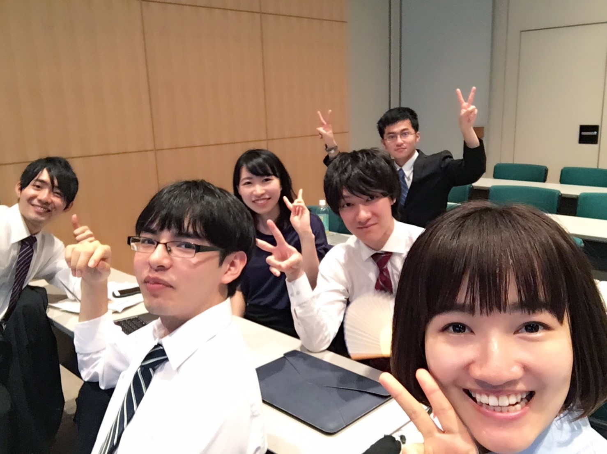
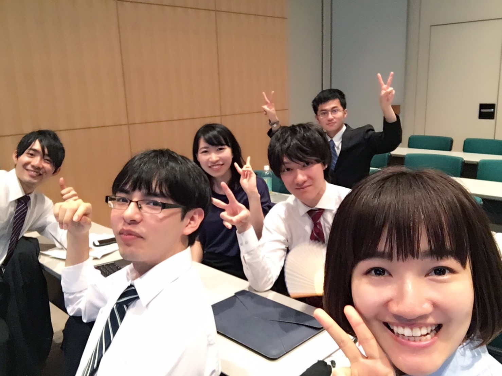
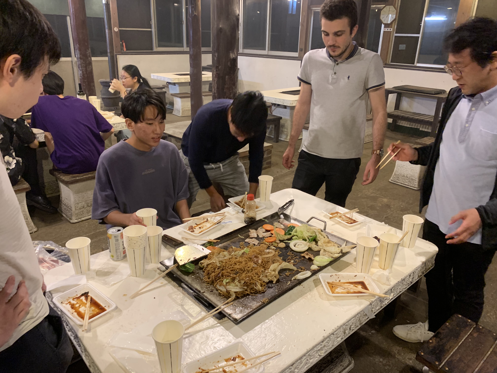

| 2023/10/10(Tue) | 研究室見学会についての記載を更新しました！ |
|---|
SCHEDULE
October-November
見学会
2023年度の日程は以下の通りです
- 10/23(Mon)
- 全体説明会
- 10/24(Tue)
- 18:10-20:00 @DR-8(14-218)
- 説明会
- 10/30(Mon)
- 18:10-20:00 厚生棟大会議室(生協の建物の３階)
- 説明会
- 11/6(Mon)
- 18:10-20:00 @DR-8(14-218)
- 説明会
January
Final
期末試験頑張りつつ、卒論・修論発表もこの時期なので是非見に行きましょう！
February
Lintaraction
今井研究室のOB会を行います。
March
Training
研究室の活動がいよいよ始まります！新人研修ではみんなのレベルに応じて必要な知識を教えます！
April
New Semester
Appreciating Cherry Blossoms
新学期が始まったのでお花見に行きましょう！
May
Softball Championship
理工学部、全研究室対抗のソフトボール大会に出ます！楽しくやりましょう！

June
Reading Articles
7月終わりの情報工学科内の輪講発表に向けて論文を選んで発表練習を行います。英語の論文にも慣れちゃいましょう！
July
Presentation
Farewell Party
輪講発表を他の研究室の先生の前でやります。今井研究室には多くの留学生が在籍しており、7月の終わりに帰ってしまうので送別会を行います！
 

August
Curry Party
Bachelor Thesis Startup
今井研究室恒例のカレー屋さんに行きます！8月で研究の進捗を出しましょう！

September
Summer Camp
夏休みに合宿をやります！しっかり遊びましょう！

October
Yagami Festival
創想館で研究発表を行なっています。
November
Futsal Championship
フットサル大会に出場して他の研究室を倒しましょう！
December
Bachelor Thesis Report
卒論の進捗を研究室内で発表します！
January
Bachelor Thesis Presentation
卒論発表です！お疲れっす！